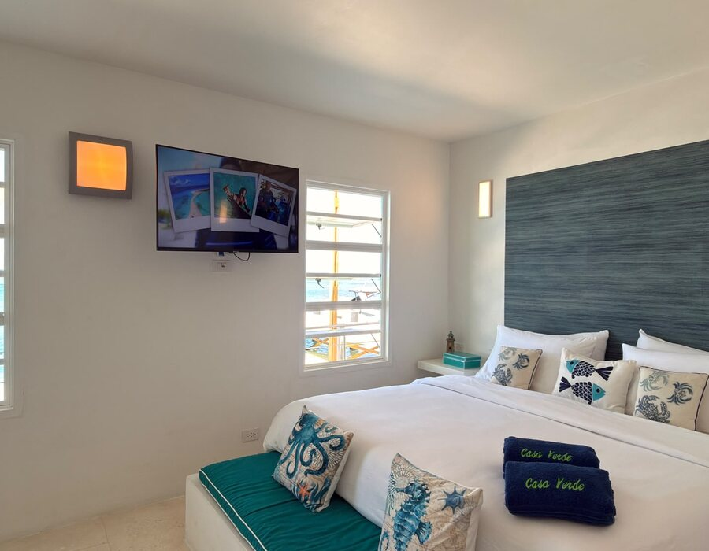
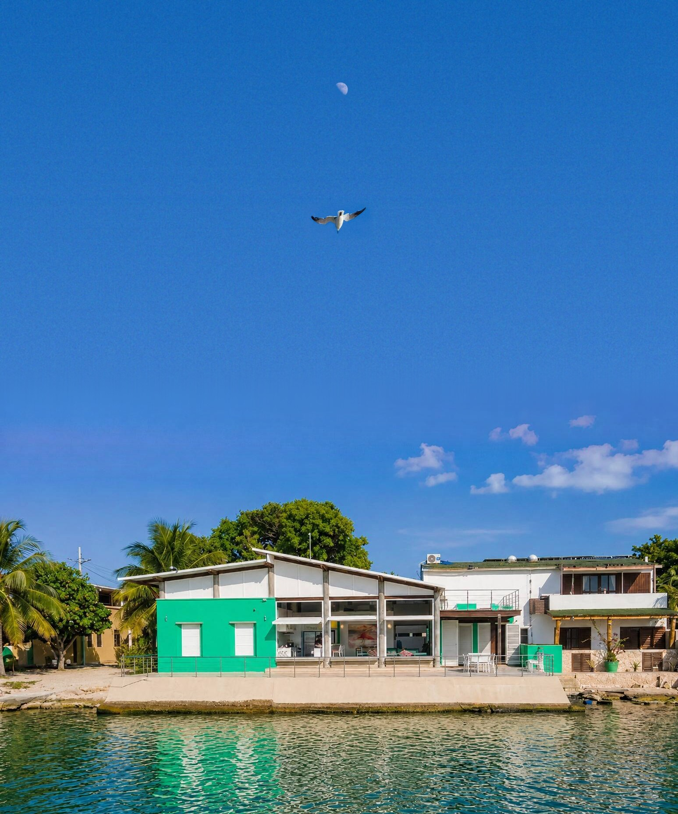
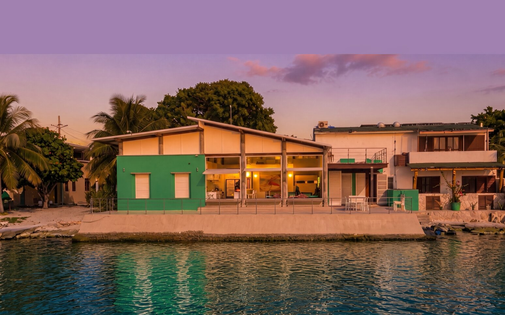
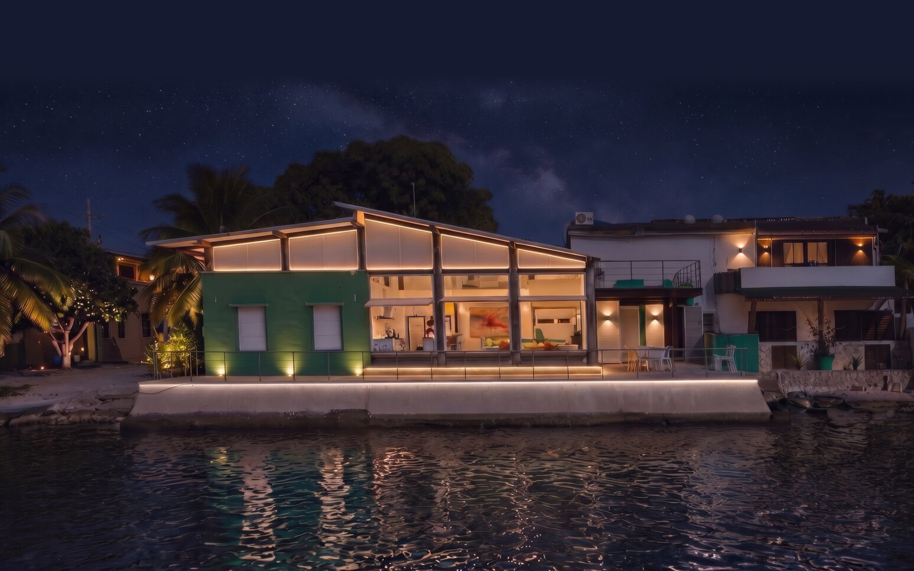
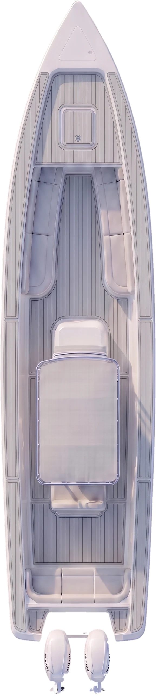
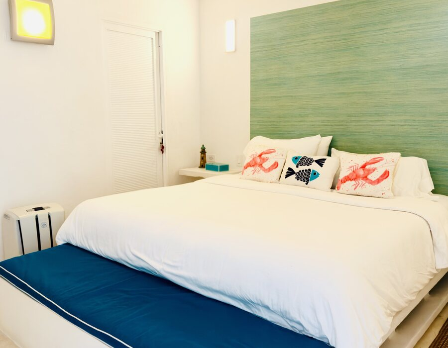
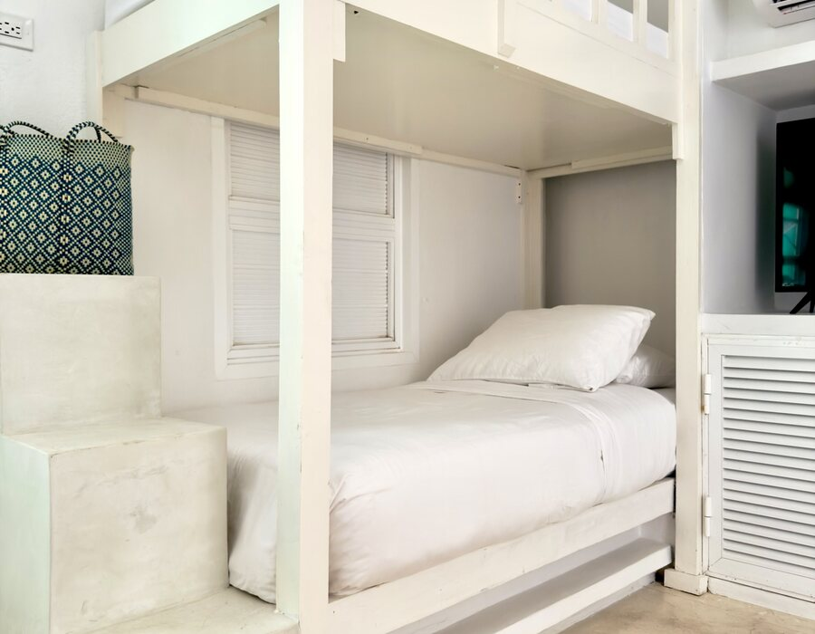
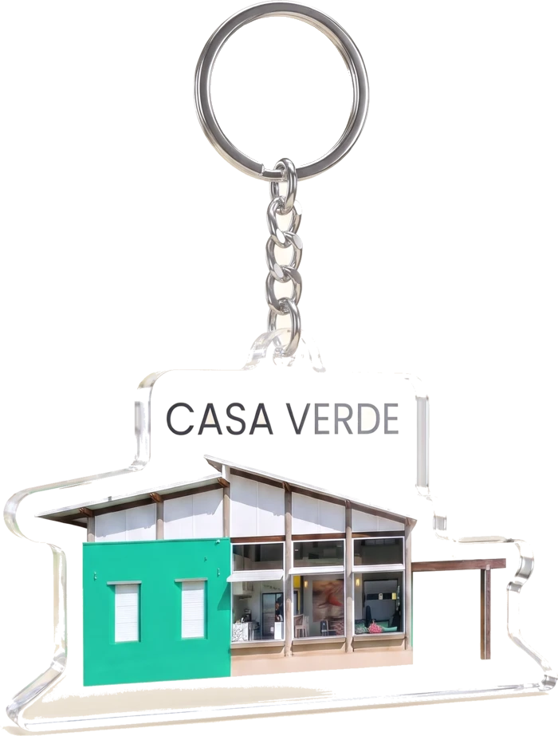

Cuarto principal

CamaMatrimonial
BañoPrivado
PersonasPor confirmar




Una chimana Beretta con dos Yamaha, capitán y marinero, lista para llevarte a los cayos y bancos de arena de Los Roques cuando tú digas.

Hasta 10 huéspedes en la casa




El chef cocina para ti; la comida es un paquete aparte. No incluye propinas.

Arrastra para recorrer la casa, de la sala al muelle.

Muebles hechos para la casa y el mar en cada ventanal.

La mesa puesta frente al agua, con el cerro al fondo.

Tres habitaciones en blanco y tonos de mar, con aire acondicionado.

Portones de aluminio que se abren hacia arriba y dejan pasar la brisa.

De la puerta al agua hay unos pasos.

Lista para salir a los cayos cuando digas.
Escríbenos por WhatsApp con tus fechas y cuántos son, y te respondemos con disponibilidad.